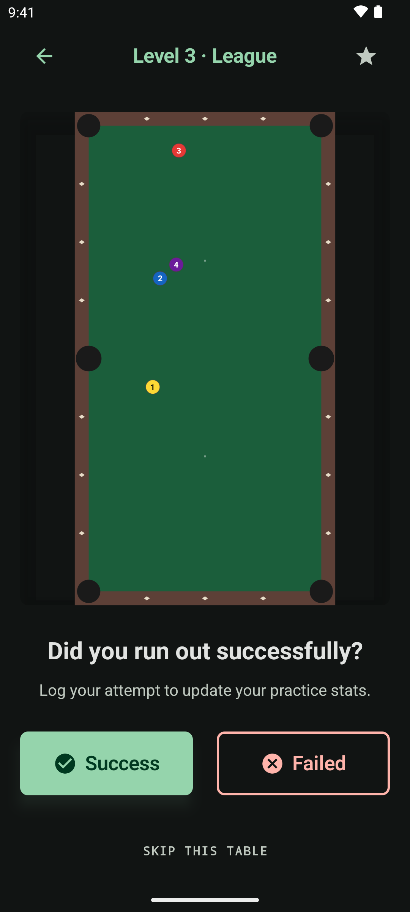

练习，以及你打过的每一桌的记录
测试告诉你哪个等级卡住了你。练习则是你为此做点什么的地方 ——正是那个等级上无穷无尽的生成球型。

一次练习
素材永远用不完，球型永远背不下来
练习球型按你选的等级随取随生成，你的尝试也会计入该等级的统计。 整个过程中示意图都留在屏幕上，球型被碰乱了也能重新摆回来。
- 一键记录成功或失败，并有确认提示告诉你已记录
- 不想打的球型可以跳过，而不必让整次练习卡在那里
- 重打完全相同的球型，把它练到彻底吃透
- 记录完立刻生成下一桌——这是一个循环，不是一棵菜单树
- 关掉应用后，可以从首页重新打开你上次生成的那个球型
训练日志
你付出过的功夫，有一份完整记录
你打过的每一个球型
全部可以翻阅，附带日期、等级，以及你在多少次尝试中清了台。
收藏
把值得反复练的球型加星，并把日志筛选到只看收藏，逐步攒出一套属于你自己的练习库。
从任何地方接着练
在日志里挑任意一桌，从它继续训练。重温一个旧球型只需一键。
空日志不会只给你一个白屏，而是会告诉你怎么把它填满。

你的位置——永久免费
回答「我到底有没有变强？」的那些数字
你的 0–100 评分和等级、你已通过的最高等级、你的临界等级，以及相比上次测试的评分变化。 下面还有：终身尝试次数、清台总数、总体清台率和最佳连胜，外加一句大白话解读这个比率 ——「你大约每 N 桌清台一次」。
在同一个页面上，一键就能重测你的临界等级。